Балканският полуостров, или Балкани, е географски и исторически район в Югоизточна Европа, разположен между Черно, Мраморно, Егейско, Йонийско и Адриатическо море, явяващ се третия, най-източен полуостров на Южна Европа. Той включва 13 държави: 7 изцяло разположени там (Босна и Херцеговина, Черна гора, Албания, Косово, Северна Македония, Гърция и България); 3, на които по-голямата част е там (Словения, Хърватия и Сърбия), и 3, на които много малка част е там (Италия, Румъния и Турция). Площта му е около 466 877 km², а населението е около 70 млн. души, като то е разпределено неравномерно. Най-високата му точка е връх Мусала в Рила, България. Северната граница на полуострова често има различни определения, но в повечето източници за такава се приема река Дунав от делтата ѝ в Черно море до устието на река Сава, а след това условната линия до върха на Триесткия залив. Дължина от запад на изток около 1260 km, от север на юг 950 km.
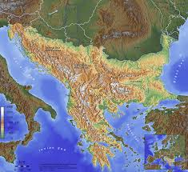 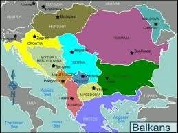 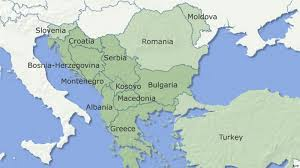Наименованието Балкански полуостров, свързано с планината Балкан / Хемус / сега Стара планина, е предложено за първи път в научните среди от немския географ Йохан Август Цойне (1778 – 1853) през 1808 г. в публикуваната от него книга „Опит за научно описание на Земята“. Предлагайки го, Цойне се ръководи от аналогията с другите два южни европейски полуострова: Апенински полуостров и Пиренейски полуостров, които получават имената си от планините, съответно Апенини и Пиренеи, които ги доминират или ограничават. Според популярната версия, името „балкани“ е с турски произход, означава „зелени, гористи планини“, и е свързано с нахлуването на османците през XIV век. Те наричат главната планинска верига Kocabalkan или само Balkan. На елините тя е известна като Άιμος, на славяните като Маторни гори, а на българите като Стара планина.
Балканската война, наричана още Първата балканска война, за да се различава от Междусъюзническата (Втората балканска) война, е военен конфликт между Османската империя, от една страна, и съюзените България, Сърбия, Гърция и Черна гора, от друга, продължил от 26 септември (9 октомври по нов стил) 1912 година до 17 (30) май 1913 година. Победата на съюзниците слага край на петвековното османско господство на Балканския полуостров. Империята губи всичките си владения на полуострова, с изключение на тясна ивица територия по северния бряг на Мраморно море. Останалата част на Тракия заедно с Източна Македония попада под българска власт. Сърбия завладява Косово, Северозападна Македония и други области, Гърция – Епир, редица острови в Егейско море и Югозападна Македония със Солун, а скоро след Лондонския мирен договор е създадена независима Албанска държава. Споровете за подялбата на Македония водят до разрив в Балканския съюз и до Втората балканска война, която избухва само месец след приключването на Първата.
Причини за войната Предпоставките за Първата балканска война, формулирани в Карнегиевата анкета, са: военно-политическото отслабване на Османската империя; потискането на християните в нейните европейски провинции; неуспехът на борбата на населението на Македония и Одринско за автономия; противоречията между големите европейски държави (т. нар. „Велики сили“), които не успяват да наложат реформи на режима в двете области; съюзът между балканските християнски държави в стремежа им за национално обединение и териториално уголемяване за сметка на Османската империя.
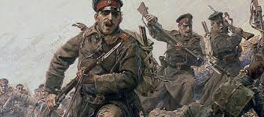 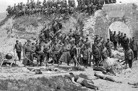
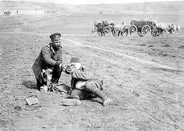
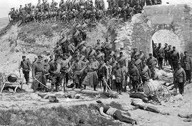
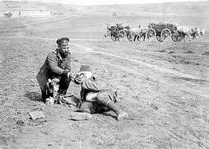
Междусъюзническата или Втората балканска война е въоръжен конфликт между България, от една страна, и Сърбия, Гърция, Черна гора, Румъния и Османската империя, от друга, през лятото на 1913 година. Причина за войната е спорът между членовете на Балканския съюз за разпределяне на земите, отнети от османците по време на Първата балканска война. Бойните действия избухват в Македония след безуспешен опит на 2-ра и 4-та българска армия в нощта на 16 срещу 17 юни да изтласкат сръбските и гръцките войски от оспорваните територии. След ожесточени боеве при Кочани и Кукуш в първите дни на войната българите са принудени да отстъпят на изток покрай Брегалница и на север покрай Струма. В стремежа си към териториално разширение за сметка на България на 28 юни Румъния се включва в конфликта на страната на нейните противници. На 6 (19) юли се намесва и Османската империя, чиито войски преминават граничната линия Мидия - Енос и завземат Одрин. В резултат на сраженията при Калиманци и Кресненския пролом настъплението на сърби и гърци в Македония е спряно, но междувременно румънските войски прекосяват Дунав, достигат околностите на София и принуждават българското правителство да иска примирие.
С Букурещкия мирен договор от 28 юли България е принудена да отстъпи на бившите си съюзници по-голямата част от Македония, а на Румъния – Южна Добруджа. Сърбия и Гърция затвърждават и разширяват придобивките си от Първата балканска война, в резултат на което почти удвояват териториите си. С Цариградския договор Османската империя си връща Източна Тракия. Населението в завладените земи е подложено на етническо прочистване, стотици хиляди българи, гърци и турци са принудени да напуснат домовете си в Македония и Тракия.
Мирните договори не решават противоречията между балканските страни. Значителните разходи и жертвите, дадени във войната, засилват тяхната икономическа и финансова зависимост от големите европейски държави. С избухването на Първата световна война (юли 1914 година) военните действия на Балканите са подновени.
 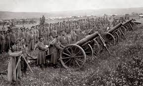
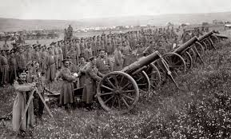

Балканските държави са страните, разположени изцяло или частично на Балканския полуостров — регион в Югоизточна Европа, известен с богата история, разнообразни култури и стратегическо положение между Европа и Азия. В балканските държави се формират нови политически и икономически структури, които са резултат от балканските войни. Тези държави включват България, Сърбия, Гърция, Черна гора и Румъния. Те се стремят към национално обединение и териториално разширение, но се сблъскват с противоречия между себе си и с външни страни.
Има общо 10 държави и те са: България, Сърбия, Гърция, Черна гора, Румъния, Молдова, Северна Македония, Албания, Хърватска и Словения. И техните столици са: София (България), Белград (Сърбия), Атина (Гърция), Подгорица (Черна гора), Букурещ (Румыния), Кишинев (Молдова), Скопие (Северна Македония), Тирана (Албания), Загреб (Хърватска) и Любляна (Словения).

 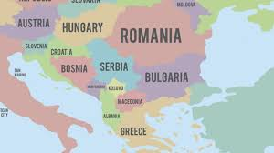
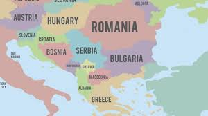
България е европейска, балканска, черноморска и придунавска държава. Тя е разположена в Югоизточна Европа, и заема източната част на Балканския полуостров. България граничи на север с Румъния, на запад със Сърбия и Северна Македония, на юг с Гърция и Турция, а на изток с Черно море. Река Дунав, от устието на река Тимок до Силистра е естествената природна граница между Република България и Румыния. Територията на страната е 110 994 km2, от които 261,4 km2 са крайгранични речни води и 101,3 km2 са крайгранични речни и морски острови. Към тази територия не се включва дванадесетмилната морска акватория. По въздушна линия, от запад на изток страната е с дължина около 520 km, а от север на юг ширината ѝ е 330 km.
Общата дължина на държавната граница е 2245 km, от които 1181 km са сухоземни, 686 km – речни (главно по река Дунав) и 378 km – морска. Освен континенталната част, България също притежава 62 острова в река Дунав, от които по-големите са Белене, Козлодуй, Вардим, Батин, Голяма Бьргина Лютляк и др. и 7 малки острова в Черно море – (Св. Иван Св. Кирик Св. Анастасий и други) с обща площ над 100 km2.
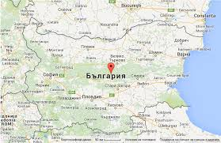 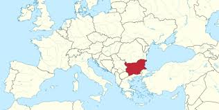 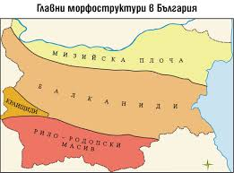
Населението на България е 6 951 482 души по данни на НСИ към 31 декември 2019 година.[56] В градовете живеят 73,7% от общия брой на населението, като 24,2%, или 1 242 568 души, са съсредоточени в столицата София. Други големи градове са Пловдив (347 851) и Варна (336 216), както и Бургас (201 779), Русе (141 231) и Стара Загора (134 726).[57] Българите са държавообразуващият етнос и съставляват 84,8% от населението. Две от малцинствата, турците (8,8%) и циганите (4,9%), са относително по-многобройни; останалите 1,5% включват други малцинства – руснаци, арменци, власи, каракачани, украинци, евреи, румънци, както и хора, които не се самоопределят.[58] Българският език е единственият официален в страната и е роден език за 85,2% от населението. Турският е майчин на 9,1%, а циганският на 4,2%.
Населението нараства до върховата си точка по времето на социализма, когато на преброяването през 1985 г. населението на третата българска държава възлиза на 8 948 649 души.[60][61] След 1989 г. населението започва да намалява значително: до преброяването през 2001 г. то спада до 7 932 984 души, а през 2011 г. е вече 7 364 570 души.[60][62] Близо 1,2 милиона българи напускат страната в периода 1990 – 2004 г. в търсене на работа.[63] Тази тенденция продължава: около 27 000 младежи емигрират всяка година, а в десетилетието след световната финансова криза от 2008 г. страната са напуснали 300 000 души на възраст под 30 години.[64][65] Съчетанието от емиграция и вътрешни политически, социални и икономически кризи довеждат България до състояние на остър демографски срив.[66][67] Почти една пета от населението е на възраст над 65 години, а близо 60% от пенсионерите живеят под прага на бедността.[68] Една трета от домакинствата се състоят от само един човек, а над 75% от семействата нямат деца на възраст под 16 години.[69] През 2017 година се раждат 57 175 деца, най-ниският брой от 1945 година насам.[66] България е на едно от последните места в света по раждаемост,[70] а по смъртност се нарежда трета в света,[71] което предопределя бързо намаляване на населението.
България няма официална религия според конституцията си, вместо това като „традиционна религия“ за страната е посочено православното християнство. Като православни християни са се самоопределили 59% от населението на преброяването през 2011 г.[59] Най-голямата малцинствена религия е ислямът, който е посочен като вероизповедание от 7,8% от населението (главно от турското малцинство, но също и от българи мохамедани и една пета от циганите, като 7,4% са сунити, 0,4% са шиити и други), следва протестантство (0,9%) и римокатолицизъм (0,7%); 0,13% следват други религии, а останалите 31% или са посочили, че нямат вероизповедание, или не са отговорили на въпроса.[59] В провежданите в страната преброявания вероизповеданието е поставено като въпрос, към който е добавена точка, че се иска отговор за вероизповеданието като „исторически обусловена принадлежност на лицето или на родителите и предците му към дадена група с определени религиозни възгледи“


 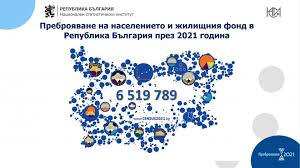
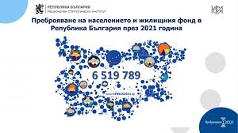
Класифицирана като развиваща се и една от страните с висок доход,[86] България е промишлено-аграрна отворена пазарна икономика със средно развит частен сектор и известен брой стратегически държавни предприятия. През последните години постига висок икономически растеж, и въпреки това продължава да бъде страната с най-ниски заплати и доходи,[87] най-нисък БВП на глава от населението (7850 евро)[88] и най-ниска производителност на труда (55,5% от средни за ЕС 100%)[89] в Европейския съюз. Според Евростат през 2023 г. БВП на глава от населението (в ППС) е 64% от средния за Европейския съюз.
Повечето туристи в България се насочват или към зимните курорти, или към летните, в съответствие със сезона. Перспективите за развиване на туризъм са големи, тъй като страната има потенциал заради природните, културните и историческите забележителности.След новата година 2026, България прие еврото. По данни на НСИ през 2017 г. България е била място за почивка и екскурзия на 11 596 167 души.[91] За сравнение през 2007 г. те са били 7 700 000 души. От 2010 г. развитието на транспортната инфраструктура е приоритет на държавното управление с оглед на улесняване и задълбочаване на икономическото взаимодействие и развиване на производството и търговията. В транспортната стратегия (до 2020 г.) на България са заложени някои основополагащи насоки: икономическа ефективност, развитие на устойчив транспортен сектор (включително ограничаване на отрицателното влияние на транспорта върху околната среда и здравето на хората), интегриране на българската транспортна мрежа към европейската.
В края на 2013 г. общата дължина на републиканската пътна мрежа е 19 678 km, като 605 km от тях са автомагистрали, 2975 km първокласни пътища, 4035 второкласни и 12 063 третокласни пътища, пътни връзки при кръстовища и пътни възли.[93] Дължината на всички жп линии е 4032 km, а превозените товари и пътници възлизат съответно на 13 538,9 хил. т. и 26 071,5 хил. п.

 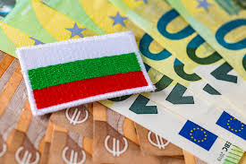
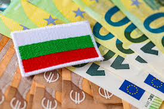
Релефът в България е много разнообразен, въпреки малката ѝ площ. От север на юг и от запад на изток се редуват низини, равнини, котловини, ниски и високи планини, прорязани от речни долини. Многообразието от форми на релефа се дължи на взаимодействието на вътрешните (ендогенните) и външните (екзогенните) процеси и явления, проявявали се през дългото палеогеографско развитие. Основните форми на релефа са образувани при действието на нагъвателните, разседните, вулканските и седиментационните процеси, особено през последния неогенкватернерен (неотектонски) етап от развитието на територията на страната. Релефът е не само природна даденост, но и важна предпоставка за развитие на редица стопански дейности. В много случаи той се оказва необратимо нарушен от човешкото въздействие.
Териториите са заливани от водни басейни с различен обхват и дълбочина, като на дъното им са се наслоявали различни по състав и произход седименти. Те от своя страна са били обхващани и преработвани от различни структурни и ортогенни процеси, участвали са в изграждането на планински масиви и вериги. Впоследствие денудационните процеси са моделирали в една или друга степен планините, отлагали са материали в по-ниските части и като цяло са заравнявали релефа. Същевременно са се изменяли и особеностите на природната среда и нейните компоненти са придобивали специфичен характер. Разкриването на палеогеографското минало е сложна научна задача, изискваща използването на редица методи и подходи, и сътрудничеството на представители на различни науки – географи, геолози, геоморфолози, климатолози и хидролози, почвоведи, ботаници и зоолози, и др. С важно значение са палеогеографските реконструкции на геоложките епохи, с помощта на които се разкрива ценна информация за природните комплекси, съществували в миналото.
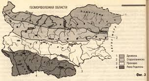
 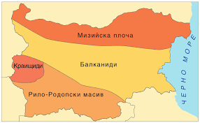
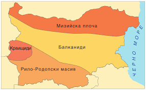
Обхваща придунавските низини, хълмистите райони до Стара планина, най-източните части на Стара планина, високите котловинни области на Краище, западната половина на Задбалканските котловини и Ихтиманското Средногорие. Средната годишна амплитуда има големи стойности от +25 до +26 °C. Средната януарска температура е от –2 до –3 °C, а средната юлска 25 – 26 °C. В тази област са отбелязани най-ниските зимни температури в България (-38,3 °C в Трън), както и много високи летни температури – 45 °C в Бойчиновци. Годишната сума на валежите от 500 – 600 mm в Дунавската равнина, достига до 800 mm в Предбалкана и котловинните полета. Ясно изразена е тенденцията на нарастване в посока юг и във височина. Характеризират се с минимум през февруари и максимум през юни. Преобладават западните и северозападни ветрове, а през пролетта и зимата преобладаващи са източните ветрове. В Дунавската равнина те могат да бъдат с много висока скорост. Често явление са и фьоновите ветрове в Дунавската равнина и Софийско поле.
Тази климатична област е предимно под влиянието на континентални въздушни маси на умерените ширини и такива формирани над Балканския полуостров. От северозапад и запад нахлуват трансформирани океански въздушни маси. Наблюдава се и нахлуване на тропичен въздух, както и на арктичен през студеното полугодие. Тази климатична област има най-добре изразени континентални черти на климата, като континенталността намалява от север на юг.
Обхваща Горнотракийската низина, северната половина на Тунджанската област, източната половина на Задбалканските котловини, Благоевградската, Кюстендилската и долната част на Дупнишката котловина. Годишната температурна амплитуда е около 23 °C. Средната януарска температура е -1 °C, която се характеризира с известна неустойчивост. Възможно е да се повиши до 20 °C, а също така да спадне до -25 °C дори -30 °C. Средната юлска – 24 – 26 °C, а максималните летни температури достигат до 40 °С. Отличава се с мека зима, хладна пролет и горещо лято. Годишната валежна сума е 550 mm – 600 mm, а в района на Горнотракийската низина тя е под 500 mm. Снежната покривка е неустойчива, като почти не се осъществява постоянно и непрекъснато снегонатрупване. Преобладават западните и северозападни ветрове, а през пролетта и лятото в източните части на Горнотракийската низина се проявяват източните и североизточни ветрове.
Като цяло общите черти на климата в тази област са по-благоприятни в сравнение с умерено-континенталната климатична област.
Обхваща долините на реките Струма и Места, южно от Кресненското дефиле и проломът Момина клисура, средното и долното течение на река Арда, източно от язовир Кърджали, Източните Родопи, южната половина на Тунджанската област и Странджанското черноморско крайбрежие. Климатът се формира под въздействието на трансформирани тропични въздушни маси и такива на умерените ширини. Средната годишна температура е 13 °C – 14,0 °C. Средната януарска температура е положителна – 1 °C – 3 °C, а средната юлска температура – 24 °C – 25 °C. Годишната температурна амплитуда не надхвърля 23 °C – 24 °C. Областта е с положителен радиационен баланс през цялата година. Режимът на валежите /с есенно-зимен максимум и летен минимум/ е характерен за средиземноморския тип климат. Периодът на засушаване не е така продължителен и максимумите и минимумите на валежите са относително по-слабо изразени. Годишните валежни суми са между 500 – 600 мм, а в южната планинска област достигат до 700 – 1000 мм. Снежната покривка е много непостоянна, задържа се 1 – 2 дни, по долините на Струма и Места тя се образува веднъж на няколко години.
Обхваща меридионална ивица с ширина 40 - 60 км на запад от брега на Черно море. Характерно за областта е, че има малка денонощна и годишна амплитуда (20 – 21 °C). Средна годишна температура – от +12 до +13,3 °C. Средната януарска температура е положителна – 2,0 °C. за северното крайбрежие и 4,2 °С по Южното Черноморие (Ахтопол). Областта се характеризира с най-слаби валежи. Така например в Добруджа те не достигат 500 мм, но в южната част нарастват над 800 мм. В зависимост от термичните условия снежната покривка в северната част се задържа 2 – 4 седмици, а в южната 4 – 5 денонощия. През лятото преобладава бризовата циркулация, която се заражда благодарение на откритата водна площ и денонощния режим на температурата. През зимата преобладаващи са северните и североизточни ветрове. Понякога тяхната скорост надхвърля 30 м/с.
Климатът тук се формира освен под влиянието на атмосферната циркулация, характерна за тази част на Балканския полуостров, но и от влиянието на Черноморския басейн. В областта, както и при преходно-континенталната област се преплитат две климатични влияния – на континента Европа (от северозапад и североизток) и средиземноморско от югозапад. Континенталното климатично влияние е по-силно изразено в северната половина, средиземноморското – в южната половина. Черно море от своя страна допълнително трансформира нахлуващите над него въздушни маси и формира специфичен климат. Той не може да бъде отнесен нито към преходно-средиземноморския, нито към преходно-континенталния климат. Специфичния черноморски климат е по-мек въпреки липсата на планински прегради. Благодарение на Черно море адвекциите на студени континентални или арктични въздушни маси не се проявяват така остро.
Обхваща районите с надморска височина над 1000 м. Характеризира се с по-ниските температури, малка температурна амплитуда, голяма облачност и валежи, продължителна и устойчива снежна покривка, ниско атмосферно налягане, висока относителна влажност, силни ветрове. Средногодишната температура е над 0 °C, но над 2300 м н.в. тя е отрицателна (връх Ботев – –0,6 °C, връх Мусала – до –3 °C). Максималните средномесечни температури настъпват през август, а минималните – през февруари. Средните януарски температури на височина 1200 – 1300 м са от -3,5 °C до -4,5 °C, а на височина 1180 – 1900 м – са от –6 °C до –7 °C. В най-високите части на планините средните януарски температури достигат до –10 °C. Средната годишна сума на валежите е 800 – 1000 мм. Най-голяма е тя през пролетта в по северните планински райони, а в южните – през зимата. Периодът със снежна покривка обхваща от 5 до 9 месеца. По билата на планините духат много силни ветрове – скоростта им достига до 30 м/с. Въз основа на измененията на климатичните елементи различаваме нископланински климат (до 1000 м), среднопланински (до 1800 м) и високопланински (над 1800 м).
 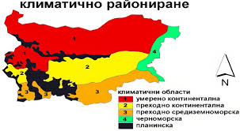
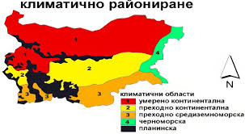
 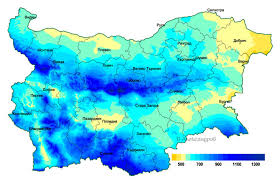
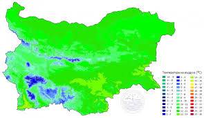
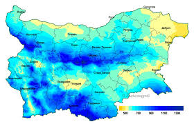
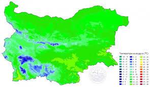
Обхваща районите с надморска височина над 1000 м. Характеризира се с по-ниските температури, малка температурна амплитуда, голяма облачност и валежи, продължителна и устойчива снежна покривка, ниско атмосферно налягане, висока относителна влажност, силни ветрове. Средногодишната температура е над 0 °C, но над 2300 м н.в. тя е отрицателна (връх Ботев – –0,6 °C, връх Мусала – до –3 °C). Максималните средномесечни температури настъпват през август, а минималните – през февруари. Средните януарски температури на височина 1200 – 1300 м са от -3,5 °C до -4,5 °C, а на височина 1180 – 1900 м – са от –6 °C до –7 °C. В най-високите части на планините средните януарски температури достигат до –10 °C. Средната годишна сума на валежите е 800 – 1000 мм. Най-голяма е тя през пролетта в по северните планински райони, а в южните – през зимата. Периодът със снежна покривка обхваща от 5 до 9 месеца. По билата на планините духат много силни ветрове – скоростта им достига до 30 м/с. Въз основа на измененията на климатичните елементи различаваме нископланински климат (до 1000 м), среднопланински (до 1800 м) и високопланински (над 1800 м).
 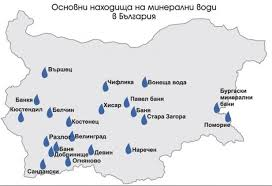
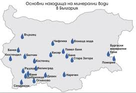
Най-дългата река на територията на България е река Дунав – 470 km (в българския си участък). Тя обаче само пресича територията ни, като е и естествена граница със северната ни съседка – Румъния. Река Дунав извира от Шварцвалд, Германия, има късно пролетно-лятно пълноводие и при по-студени зими замръзва. Искър е най-дългата българска река – 368 km. Извира от Рила и се влива в Дунав. При прекосяването на Стара Планина образува Искърския пролом, който е дълъг 65 km. Река Искър има снежно-дъждовно подхранване. Други големи притоци на р. Дунав са Лом, Огоста, Вит, Осъм и Янтра. От реките, вливащи се директно в Черно море, най-голяма е р. Камчия – 245 km. Тя извира от Дунавската равина. Има два големи притока – Луда Камчия и Голяма Камчия. Има дъждовно подхранване и зимно пълноводие. Други по-известни реки, вливащи се в Черно море, са Ропотамо и Велека (южното Черноморие) Към Егейската отточна област спадат реките, намиращи се в Горнотракийската низина и Рило-Родопския масив. Най-голяма е река Марица-321 km. Тя има снежно-дъждовно подхранване. Пълноводието ѝ е през май-юли, а маловодието – през зимата. По-големи нейни притоци са Тунджа и Арда, както и Чепеларската река, Въча и др. Струма извира от Витоша, дълга е 290 km и има добре развита речна тераса. Места от своя страна извира от Рила. И двете са важни за стопанството на страната.
В България има над 400 езера с обща площ от 95 km². Според вида си те се делят на тектонски, карстови, свлачищни, високопланински, крайречни и крайморски. Крайморски Те са общо два вида: лиманни – Варненско езеро (19 m дълбочина), Бургаско езеро (площ 27,6 km²) и Атанасовско езеро, и лагунни – Поморийско езеро. Крайречни Подобно е само езерото Сребърна, превърнато в резерват. Високопланински Те са възникнали възоснова действието на ледниците по високите части на Рила и Пирин. В рила са 140 на брой, в Пирин – 119. Най-голямото Рилско езеро е Смрадливото с площ от 212 дка, а най-дълбоко е Окото – 38 m. В Пирин първенец е Поповото езеро. Тектонски Те са възникнали при движението на тектонските земни пластове. Такива езера има във високите части на Рила. Свлачищни Образуват се близо до свлачища. В България се намират в областта на Смолян. Карстови Образуват се в негативни форми на релефа, при карстови наличности. Има ги в областта на Предбалкана, но са вече пресъхващи. Едни от най-големите карстови извори в България са край село Триводици, намиращо се под възвишенията Бесапарски ридове между Стамболийски и Пазарджик Блата Нямат важно значение за стопанството на страната. Делят се на два вида – низинни и планински. Язовири Важни за националната сигурност на страната. Поради малките наличности на водни ресурси, язовирите са в голяма полза за по-доброто използване на водите. По-големи язовири са „Студен кладенец“, „Кърджали“, „Батак“, „Искър“ и др. Подземни води Подземните води съставят близо 1/3 от водния ресурс на страната. Делят се на 4 основни групи: Грунтови Използват се за снабдяване на селища с питейна вода и за напояване. В повечето случаи излизат на повърхността чрез извори. Има наличие на грунтови подземни води в Дунавската равнина и Горнотракийската низина. Напорни Представляват води, намиращи се между два слоя непромокаеми скали. Извличат се чрез сонди. Използват се в селското стопанство за напояване. Има наличие на напорни води в Ломско, Плевенско, Варненско, Софийско. Минерални България е една от страните с най-голям воден ресурс на минерална вода. Тя се дели на два вида – според веществата в нея и според температурата. Според температурата биват: студени до 37 °C, топли – от 37 до 60 °C и горещи – над 60 °C. Минерални подземни води има в областта на Хисаря, Хасково, с. Баня, Стара Загора и др. Карстови Образуват се в близост до карбонатни скали. Откриват се в Предбалкана.
България е държава с богата и древна история, която започва с основаването на Първата българска държава през 681 година от хан Аспарух. Тази държава се разраства и става мощна сила в региона, като достига своя зенит през IX и X век при управлението на цар Симеон Велики. През този период България е културен и духовен център на славянския свят, като създава своята азбука и развива литературата и изкуствата.
На територията на България – в местността „Азмака“ в Чирпанско – са намерени части останки (зъб) на примата Graecopithecus freybergi, датирани от преди 7,2 милиона години. Точната класификация на грекопитеците е спорна, като някои палеонтолози допускат възможността те да са най-ранните представители на подсемейство Homininae.[1] От средния палеолит е обитавана и пещерата „Бачо Киро“ в Дряновско, в която са открити едни от най-ранните свидетелства за присъствие на разумен човек (H. spaiens) в Европа, датирани отпреди 44 хиляди години в началото на късния палеолит.[2][3] Скални рисунки от късния палеолит до бронзовата епоха са добре запазени в „Магурата“ в Белоградчишко.[4] Част от археологическите обекти от неолита се групират в археологически култури, като „Караново“, „Хаманджия“ и „Винча“.
Най-ранните следи от човешко присъствие в България са находки на изправен човек от ранния палеолит в пещерата „Козарника“ на възраст от над 1,4 милиона години, които са и най-старите известни в Европа, маркирайки един от двата пътя на навлизане на първите хора на континента – през Балканския и през Пиренейския полуостров.[8] Пещерата продължава да се обитава и в средния палеолит, от когато в нея има останки от неанедрталци на около 150 000 години.
Предполага се, че първите траки се заселват в източната половина на Балканския полуостров, включително на днешната територия на България около 3500 г. пр.н.е. През XII век пр.н.е. вече са обособени в групи и населяват Балканския полуостров. Древногръцкият историк Херодот дава описание на траките в своята „История“ (5 – 3), казвайки че: „Тракийската народност е най-многобройна след индийската. Във всяка отделна област траките носят отделно име, но нравите и обичаите на цялата народност са навред едни и същи.“
В 479 г.[11] византийският император Зенон се принудил да се съюзи за пръв път с „тъй наричаните българи“, пише Йоан Антиохийски.[12] Марцелин Комес съвременник на тези събития, пише в своята хроника за година 499: „Арист, началникът на войската в Илирик, се отправил с петнадесет хиляди войници и петстотин и двадесет коли, натоварени с необходимото за воюване оръжие, срещу българите, който опустошавали Тракия. Сражението се завързали край река Цурта, където загинали повече от четири хиляди наши войници било в бягство, било като се хвърляли от високия речен бряг“.[13] По-късно Йоан Зонара[14] съобщава, че „...по това време племето на българите, което по-рано не било познато, нахлуло в Илирик и Тракия“, а Теофан Изповедник[15] поставя това нахлуване през 501 година. Това са едни от първите сведения за прабългарските племена по тези земи.
След разпадането на хунската държава (453) славяните започват да преминават през проходи в Карпатите и през втората половина на V век се настаняват в Трансилвания. След като голямата част от остготите се насочват към Италия (488), славяните заемат обитаваните от тях области по поречието на Долен и Среден Дунав. Първото славянско нападение през Дунав е отбелязано в историята през 519 г. по време на император Юстин I и е извършено от антите. През VI век славяните започват да усядат и южно Дунав в балканските земи. През 7 век южните славяни стават преобладаващото население на Балканския полуостров. Постепенно те заемат плътно Мизия, Тракия, цяла Македония, Родопите, Беломорието, днешна Албания, старата Гърция с адриатическия бряг и централен Пелопонес и дори някои от егейските острови. Славяни са заселени и в предна Мала Азия.
През първите години след войната страната изпада в политическа криза. На 6 октомври 1919 г. се сформира правителството на министър-председателя Александър Стамболийски. Същата година той подписва Ньойския мирен договор. През март 1920 г. се провеждат предсрочни парламентарни избори. Печели ги Българският земеделски народен съюз (БЗНС), който образува самостоятелно земеделско правителство (21 май 1920 – 9 юни 1923) начело със Стамболийски. На 16 декември 1920 България е приета в Обществото на народите. Недоволните от управлението на БЗНС подкрепят Деветоюнския преврат от 1923 г., извършен от Военния съюз начело с полковник Дамян Велчев. На власт идва коалиционно правителство начело с лидера на Народния сговор Александър Цанков. Опитите за съпротива на Оранжевата гвардия и земеделските дружини са смазани. Александър Стамболийски е заловен и жестоко убит.
Под натиск на военните през август 1923 г. е създадена казионна партия Демократически сговор. Москва нарежда на Централния комитет на Българската комунистическа партия (тесни социалисти) да започне подготовка за въстание.[33] Септемврийските бунтове от 1923 са обречени предварително на неуспех. През ноември Демократическият сговор печели изборите. През 1924 г. е приет Законът за защита на държавата и са забранени прокомунистическите организации. БКП минава в нелегалност и под натиска на Коминтерна се възприема подготовка на ново въстание. На 16 април 1925 г. военната организация на БКП извършва атентат в столичната църква „Света Неделя“, при който са убити над 150 души и ранени 500. Правителството отговаря с арести и убийства на видни представители на левицата.
През следващите години в страната се провеждат политически и икономически реформи с променлива интензивност. Този период често е наричан Преход на България към демокрация и пазарна икономика, като има различни мнения за това кога приключва. На 15 ноември 1990 г. VII велико народно събрание променя името на държавата от Народна република България на Република България.[38] На 7 декември 1989 г. 13 от некомунистическите политически групи се събират във федерация, която приема името Съюз на демократичните сили (СДС). За свой водач Координационният съвет на СДС избира Желю Желев.[39] На 3 януари е създаден нов политически орган „Кръгла маса“.[40] На 4 януари 1990 г. е учредено Движението за права и свободи (ДПС). На 29 януари е оповестено, че Тодор Живков е арестуван по обвинение включващи злоупотреба на властта, присвояване и подстрекаване към етническа ненавист. От 30 януари до 2 февруари е свикан извънредно XIV конгрес на БКП, който се стреми да обнови и реформира партията – закрити са Политбюро и Централният комитет. Младенов се отказва от поста си на партиен ръководител, като остава държавен глава. Заменен е от Александър Лилов.[39] На 23 февруари в София се състои огромна демонстрация с близо 200 000 протестиращи, недоволни от бавния напредък на разговорите около Кръглата маса. На 27 февруари националният празник на България е върнат от 9 септември на 3 март.[41] В края на март Отечественият фронт е преименуван на Отечествен съюз. Вътрешната „перестройка“ на XIV конгрес е последвана в началото на април от промяна на името – БКП става БСП (Българска социалистическа партия).[42] През юни са проведени избори за VII велико народно събрание. Изборите са спечелени от БСП, което предизвиква недоволство сред антикомунистическите сили. Започват студентски окупационни стачки. В центъра на столицата е създаден „Град на истината“ и е подпален Партийният дом. Президентът Петър Младенов подава оставка. Желю Желев е първият демократично избран президент на България. Той встъпва в длъжност на 8 август 1990 г.[40]
На 8 септември 1946 г., в нарушения на изискванията на Търновската конституция, е проведен референдум – „допитване до народа за премахване на монархията и провъзгласяване за народна република“. На 15 септември България е провъзгласена за народна република. На 27 октомври 1946 са проведени избори за VI велико народно събрание, което има за задача да изготви нова конституция. Изборите са спечелени от Българската работническа партия (комунисти) – БРПк, и Георги Димитров оглавяват новото правителство. На 10 февруари 1947 г. България подписва Парижкия мирен договор, според който българската държава запазва границите си от 1 януари 1941 г. На 4 декември 1947 Великото народно събрание приема Конституцията на Народна република България, наречена още Димитровската конституция. В края на 1947 е извършена национализация и цялата собственост става държавна. Петият конгрес на БКП 1948 открито признава „диктатурата на пролетариата“. През VI велико народно събрание приема Закона за вероизповедания, който дава възможност на държавните органи да се месят пряко в работата на религиозните общности.
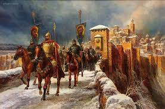


Българската кухня е условно понятие, с което се подразбират традиционните български ястия и модерните приноси, заимствани отвън. Най-общо под понятието „българска кухня“ се разбира основният комплект от ястия и съставки, които присъстват в бита на българския народ. Едни от най-характерните продукти, използвани в българската кухня са бялото саламурено сирене и киселото мляко.[1] Рецептите са формирани в продължение на векове, с традиции в овкусяването и изградени методи и техники за приготвяне, представляващи синтез от европейската и азиатска кухня.
Със създаването на българската държава се поставя началото на сливането на кухните на траки, славяни и прабългари и изграждането на националната кухня. Всяка етническа група се включва със свои кулинарни традиции. Хранителните традиции са се формирали под действието на следните фактори: географско положение, обществено-икономическо развитие, религия, селско стопанство, сезонност, съоръжения и др. Археологическите данни сочат, че основните съставки на древната кухня в нашите земи са били традиционните за района зеленчуци – зеле, морков, цвекло, ряпа, лук, чесън; различните видове месо – овче, козе, свинско, говеждо, птиче, дивеч; млечни продукти, зърнените храни – просо, овес, ечемик, ръж, пшеница; както и бобовите растения – бакла, леща, грах, фий и други.
По-късно, в периода 16 – 17 век, в българската кухня навлизат като продукти растенията и животните, открити в Америка – появяват се неизвестни преди това храни като фасулът, пиперът, доматът, картофът, царевицата, слънчогледът, пуешкото месо и т.н. От изток на свой ред се появява оризът, патладжанът, специфичните подправки и съставки, като чер пипер, джинджифил, риган, канела и т.н. Поради близостта си до Ориента, ориенталски технологии на приготвяне на храната също присъстват в България, а някои имена на ястия, дори с модифицирани рецепти носят същите имена – мусака, гювеч, имамбаялдъ, кьопоолу, пилаф, баклава, кадаиф и мн. др. След Освобождението се намесват влияния от Европа, като много от тях са интерпретирани специфично – като съставки, технология на приготвяне, начин на поднасяне и др.
След 1940 и особено след 1965 г. много от основните съставки липсват на пазара и биват заменяни с други, които и днес са част от националната кухня. Така маслото бива заменяно със свинска мас, маслините – с кисели краставички, стритите яйца – с млечна „майонеза“. Отпада хайверът, появява се „Русенско варено“. Същевременно, въпреки съществуващия дефицит, по време на комунистическия режим (поради развитието на туризма и идеята за създаване на търговски марки), се появяват емблематични за днешната българска кухня наименования като „Шопска салата“, „Кавърма по радомирски“, „Боб чорба по манастирски“, „Яйца по панагюрски“ „Чушки бюрек“ и др., всички те наложени от номенклатурата на националния туроператор Балкантурист.


Българско народно творчество е общото наименование за произведенията на изкуството и постиженията на културата, предаващи се традиционно от поколение на поколение българи от достатъчно дълго време, за да се забрави името на техния автор.
В течение на времето, под форма на кратки разкази се появили приказките. Те описват живота на хората, техните вълнения и уроци и в крайна сметка целта им е била да забавляват хората, но и да представят от всяка случка поука. При вълшебните и тези за животни, се описват вярванията на хората, техните суеверия и понякога измислици. Поговорките се появяват като уроци за живота, извор на мъдростта на народа. Влияние върху поговорките отразяват времето когато са създадени, населеното място и областта. Често в поговорките има рима. Българските народни гатанки са оформени като кратки и забавни въпроси на хората. Всъщност от дълбока древност хората описвали основните черти на дадени предмети, които не бива да се изричат. В гатанките също често се среща рима.
Българските народни песни са най-значителният, разнообразен, художествен дял в българския фолклор. Народните песни са умотворения в стихотворна форма, при които текст и мелодия са неразривно свързани. Българското народно поетическо творчество води началото си от далечни времена. Първите сведения за народни песни и певци са от IX - X век. Най-ранният запис на български народни песни са запазените песни в българо-гръцкия речник от Богатско „Начало на думи у българите, които се отнасят към (просто)народния език“.[1] Най-много народни песни са запазени от XVIII век. Голяма част от старите народни песни не са записани и са забравени. Песните възникват като вътрешна потребност на създателите – да дадат израз на своите преживявания и мисли. Те са изпети в тъжни или радостни дни – на големи празници, на нивата, край стана. Техни творци са хора с поетически и музикален талант – певци, гуслари, гайдари, калваджии. Народната песен се създава и развива на село. Предава се от певец на певец и така се получават много и различни варианти.
 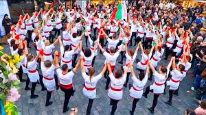
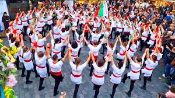


Българското изобразително изкуство се отнася до всички форми на визуално изкуство, правени в България и от български художници, също и в други точки на света. Има различни периоди на своето развитие. Негови предшественици, които го повлияват, са тракийските мозайки и изображения, златни накити и съдове и пр. Следват периодът на средновековното християнско изкуство, което е почти изцяло фокусирано върху иконостасните изображения, вече светските художествени изображения от Възраждането, изкуството след Освобождението, социалистическият реализъм в изкуството и съвременното българско изкуство.
Към VIII-VII век пр. Хр. в гръцките полиси настъпват обществено-икономичеки процеси, изразяващи се в промяна на политическия ред. Родовата аристокрация постепенно губи своята роля и на предно място в политиката излиза правото на свободните граждани да упражняват политическата си воля. Освен това технологията на производство напредва значително, което води до засилване на икономическата мощ у отделните полиси. Това води от своя страна до благоденствие на демоса и неговото разрастване. Така множество граждани търсят нови ниши за своето материално благополучие[2].
Българска литература наричаме литературата, писана на български език от времето на неговото възникване като книжовен език до наши дни. Изследователите я разделят на няколко периода, като границите между тях са условни, а и дискусионни. NB! Всички налични статии за български писатели и поети могат да бъдат намерени в Категория:Български поети и в Категория:Български писатели. По-долу са изброени само избрани имена на български автори.
Това е началният период на българската литература, който обхваща периода IX-XVIII в., някои изследователи разглеждат и по-ранни явления и текстове, писани на други езици или с други азбуки и знаци. Тя се разпространява в ръкопис и се разграничава и дори съзнателно се противопоставя на устната словесност (фолклора), за който може да се съди само по косвени данни и по-късни записи. Постепенно се очертават три големи слоя в българската средновековна словесност: висока религиозна книжнина, ниска (народна) литература и устна (фолклор).
Възраждането е важен период в българската гражданска, културна и литературна история, това е периода през ХVІІІ и ХІХ в., то означава прехода от средновековното общество и характерната му култура към ново модерно общество, към изграждането на една нова култура. Възраждането отразява етап на духовен подем за българската нация, на стопанско развитие – развитие на занаятите и търговията, поставянето на основите на българското образование и образователна система, наука и т.н. Този преход към модерното, който се осъществява постепенно, но в същото време бързо, отразява развитието в западното общество през епохата на ренесанса, макар и с известно закъснение. Възрожденските процеси сред българите се развиват по-късно не само спрямо западноевропейските страни (Италия, Франция, Англия, Германия), но и спрямо по-близки народи – Дубровник, Гърция. Относителното закъснение, така нареченото закъсняло-ускорено развитие е главната особеност на Българското възраждане, от която до голяма степен произтичат и останалите.
През периода се открояват двамата поети Смирненски и Гео Милев с тяхните описания, съответно, на социалната несправедливост Смирненски Ний (Ний всички сме деца на майката земя,/.../Край нас се вие бич, над нас тежи хомот/и робския закон на жълтия метал;) и Пролетарий (В полунощ пред заключени двери, аз стоя непризван, непознат, В беломраморни охолни зали, лъкатушат светлинни вълни -, несмутени от робски печали, веселят се мъже и жени. [всред] мрачен разкош/... всечасно през блясъка чуден/се оглежда настръхнала нощ.) и Гео Милев в описанието му на бунта срещу нея [из] мътни вади/ливади/нивя...изпокъсани/кални/гладни/навъсени/гневни/.../- без рози/и песни/.../на гърба с парцаливи торби/в ръцете - не с бляскави шпаги,/а с прости тояги,/.../се спуснаха всички отвред/.. /Септември. /...народ -/затъпен/унижен/из мрака тревожен/...въстана.
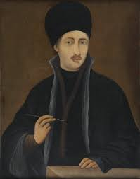
 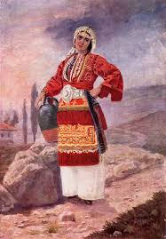
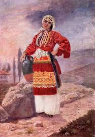
Едни от най-известните български писатели и поети са Стефан Стамболов, Иван Вазов, Николай Костов, Гео Милев, Смирненски, Христо Ботев, Йордан Йовков, Елин Пелин и много други.
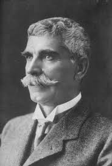 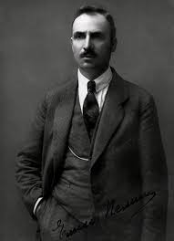
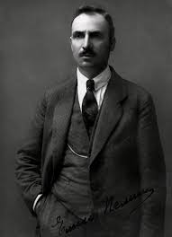

Гърция е планинска страна, намираща се в южната част на Балканския полуостров и прилежащите към него острови, разположена в пояса на сухите субтропици. Общата дължина на сухоземната,в т.ч. речна граница на Гърция е 1223 km. На северозапад граничи с Албания (дължина на границата 256 km), на север със Северна Македония (262 km) и България (493 km) и на североизток с Турция (212 km). Има излаз на Средиземно, Йонийско и Егейско море. В тези си граници площта на Гърция е 131 960 km². Поради силно разчленената брегова линия и множеството острови, Гърция има 12-ата по-дължина брегова линия в света с дължина от 13 676 km.[1] Бреговете на Гърция са изпъстрени с множество заливи и заливчета, явяващи се естествени пристанища. Много характерни са праволинейните стръмни брегове с тектонски произход. Най-значителните полуострови са Пелопонес на юг и Халкидики на север. На Гърция принадлежат Северните и Южни Споради, Цикладите, Крит, Йонийските острови и др.
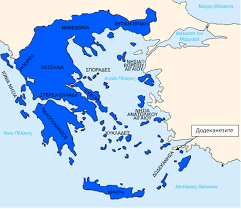 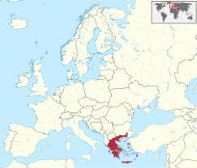

Планините и платата заемат около 2/3 от територията на Гърция. Цялата ѝ територия от северозапад на югоизток се пресича от 2 планински системи. Западната се простира покрай бреговете на Йонийско море, като обхваща планините Пинд (2637 m), след което преминава на полуостров Пелопонес. Нейно продължение са планините на островите Крит и Родос. Източната планинска система започва в планината Грамос, обхваща масивите Отрис и Парнас, след което преминава на остров Евбея и Цикладските острови. Преобладават средно високите масиви между 1200 и 1800 m. Най-високата точка на страната е в планината Олимп (2917 m), вторият по височина връх на Балканския полуостров. Планините на Гърция се отличават със своите резки ерозионни разчленения и широко развитие на карстови форми на релефа. На североизток в страната (в Тракия и Македония) навлизат южните разклонения на Пирин и Родопите. По крайбрежието на Егейско море са разположени двете най-големи гръцки равнини – Тесалийската и Солунската.


 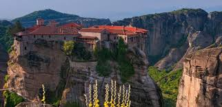
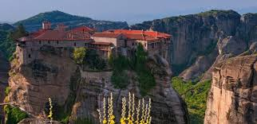